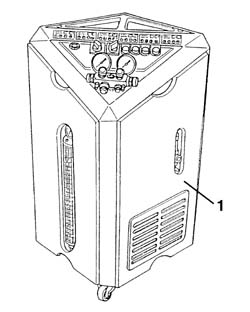
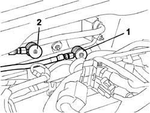
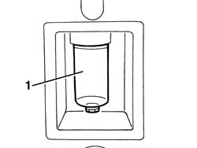
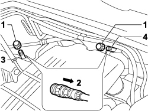
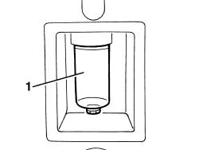

0010T84 coolant for air conditioning system dehydrate and recharge
- Path
- Procedures > 00 MAINTENANCE > 0010 NEW VEHICLES AND MAINTENANCE > 0010T VEHICLE FLUIDS > 0010T84 coolant for air conditioning system dehydrate and recharge
- Kind
- repair procedure (removal / refitting; the operation number is the code)
- Applies to
- engines: 1.4 8v, 1.3 JTD 16V; all production periods
- Interactive page
- https://sloeber94.github.io/elrnDB-fDbl/en/#/2584133
Applies to: engines: 1.2 8v, 1.6 16v, 1.3 JTD 16V, 1.9 JTD 8V, 1.9 DIESEL; all production periods
Applies to: engines: 1.3 JTD 16V; all production periods
1. Using the special draining/repressurizing equipment.

Applies to: engines: 1.3 JTD 16V; all production periods
Let the engine run with the air conditioning switched on for 10 - 15 minutes.
Undo the repressurizing valve plugs.
Before attaching the connectors to the needle valves, move the knurled ring nut upwards.
1. Connect the high pressure connecting pipe (HIGH) to the corresponding rapid attachment valve.
2. Connect the low pressure connecting pipe (LOW) to the corresponding rapid attachment valve.

Applies to: engines: 1.3 JTD 16V; all production periods
Start the procedure for draining the coolant fluid, following the instructions in the equipment manual.
1. Whilst draining the system, the fluid removed from the compressor should be collected in a special container.

Applies to: engines: 1.3 JTD 16V; all production periods
Refill the system with the same amount of recommended fluid shown on the container.
Type | Component | Name | Qty. | |
|---|---|---|---|---|
- | Oil | AIR CONDITIONER ASSEMBLY COMPRESSOR | ND 8 | - |
If certain components are replaced, the following quantities of fluid must be added for each of the components replaced:
Pipes, 5 cm3/m
Evaporator, 40 cm3
Condenser with built in filter 50 cm3
In the case of accidental breakages which result in the rapid draining of the system (in less than 5 minutes), it is not possible to determine the exact amount of fluid which has escaped because of the high pressure of the fluid. Add 50 cm3 of fluid
Start the coolant fluid repressuring procedure, following the instructions in the equipment manual.
Introduce the recommended quantity of coolant fluid.
Type | Component | Name | Qty. | |
|---|---|---|---|---|
- | Fluid | Air conditioning circuit | R134A | - |
In the case of damage to the compressor or other system components followed prolonged exposure to the air of the pipes (more than 6 hours), the system 'WASHING' procedure has to be carried out, proceeding as follows.
Clean the pipes connected to the compressor using an air line.
Connect the (now drained) system to the repressurizing equipment.
Introduce the recommended quantity of coolant fluid at the high pressure side.
Recover the coolant fluid from the low pressure side.
Repeat the introduction and recover the fluid.
Proceed with the system draining and repressurizing operations as described previously.
Refill the system with the recommended amount of fluid.
Type | Component | Name | Qty. | |
|---|---|---|---|---|
- | Oil | Air conditioning circuit | SP 10 | - |
Applies to: engines: 1.4 8v; production: da 12/03; only with equipment: MY 2005
Applies to: engines: 1.4 8v; production: da 12/03; only with equipment: MY 2005
1. Using the special draining/repressurizing equipment.
Applies to: engines: 1.4 8v; production: da 12/03; only with equipment: MY 2005
Let the engine run with the air conditioning switched on for 10 - 15 minutes.
1. Undo the repressurizing valve plugs.
2. Before attaching the connectors to the needle valves, move the knurled ring nut upwards.
3. Connect the high pressure connecting pipe (HIGH) to the corresponding rapid attachment valve.
4. Connect the low pressure connecting pipe (LOW) to the corresponding rapid attachment valve.

Applies to: engines: 1.4 8v; production: da 12/03; only with equipment: MY 2005
Start the procedure for draining the coolant fluid, following the instructions in the equipment manual.
1. Whilst draining the system, the fluid removed from the compressor should be collected in a special container.

Applies to: engines: 1.4 8v; production: da 12/03; only with equipment: MY 2005
Refill the system with the same amount of recommended fluid shown on the container.
 | Type | Component | Name | Qty. |
|---|---|---|---|---|
- | Oil | AIR CONDITIONER ASSEMBLY COMPRESSOR | ND 8 | - |
If certain components are replaced, the following quantities of fluid must be added for each of the components replaced:
- Pipes, 5 cm3/m
- Evaporator, 40 cm3
- Condenser with built in filter 50 cm3
In the case of accidental breakages which result in the rapid draining of the system (in less than 5 minutes), it is not possible to determine the exact amount of fluid which has escaped because of the high pressure of the fluid. Add 50 cm3 of fluid
Start the coolant fluid repressuring procedure, following the instructions in the equipment manual.
Introduce the recommended quantity of coolant fluid.
Type | Component | Name | Qty. | |
|---|---|---|---|---|
- | Coolant fluid [kg] | Air conditioning circuit | R134a | 0.500 |
In the case of damage to the compressor or other system components followed prolonged exposure to the air of the pipes (more than 6 hours), the system 'WASHING' procedure has to be carried out, proceeding as follows.
Clean the pipes connected to the compressor using an air line.
Connect the (now drained) system to the repressurizing equipment.
Introduce the recommended quantity of coolant fluid at the high pressure side.
Recover the coolant fluid from the low pressure side.
Repeat the introduction and recover the fluid.
Proceed with the system draining and repressurizing operations as described previously.
Refill the system with the recommended amount of fluid.
Type | Component | Name | Qty. | |
|---|---|---|---|---|
- | Oil (cm) | Air conditioning circuit | SP 10 | 130 |
Topics that link to this page (22)
- 1004B12 power unit with manual gearbox - r+r for versions with a/c
- 1016B10 single cylinder head extension - change gasket
- 1016C10 cylinder head - r + r and replace gasket
- 1020B10 cover of timing system with chain drive - r + r replace oil seal and gasket
- 1028H10 connecting rod and piston set - r r
- 1032B46 toothed drive pulley - r + r
- 1032B60 bolt pulley - r r
- 1032A12 CHAIN AND GEARS for timing system - R.R. for timing or Replacement.
- 1032C40 Timing CHAIN TENSIONER PLATE - R.R.
- 1036H57 hydraulic tappets all r r
- 1040B32 front fuel delivery line - r r
- 1084B12 engine oil pump - r+r
- 1084B26 emgine oil intake duct - r r
- 5040A20 air conditioner compressor - r+r - includes fluid level check and top up if necessary
- 5040A26 compressor mount - r r
- 5040A44 air conditioner dehydrating filter/accumulator - r+r
- 5040A50 pipe from compressor to air conditioner condenser - r+r
- 5040A58 PIPE FROM EXPANSION VALVE TO COMPRESSOR - R+R
- 5040A60 PIPE FROM CONDENSER TO EVAPORATOR (EXPANSION PIPE) - R+R
- 5040B14 air conditioner system multi-level pressure switch - r+r
- 5530A14 alternator - r+r for versions with air conditioner
- 5530A15 ALTERNATOR - R.R. FOR VERSIONS WITH RIGHT HAND DRIVE AND AIR CONDITIONING